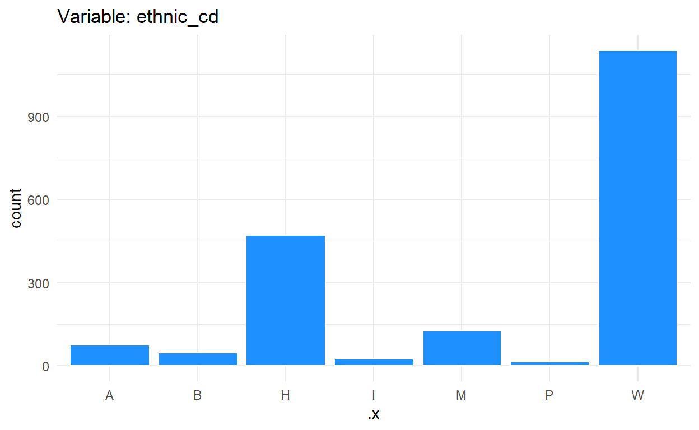
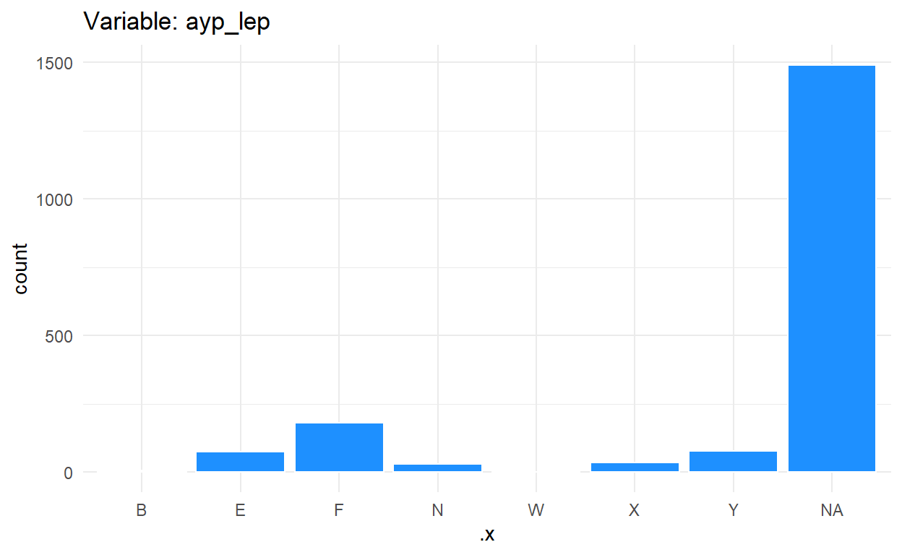

Let’s work with some data
In order to start building our models, we need to first start off by loading some data. According to the competition, we are all using the same initial data. In the code chunk below, you can see that we loaded the data from our github page. You could also download the data directly from kaggle.com at the competition page. Thankfully for this competition there is also a data dictionary that provides details about the variables in the dataset. Variables consist of school data from grades 3-8 and includes some basic demographic information of students, such as race/ethnicity and sex. There are also several id variables including the attnd_schl_inst_id and the ncessch variables, which are the Oregon Department of Education (ODE) assigned institution identifier for the attending school and the National Center for Education Statistics (NCES) school identifier. These two id variables were useful for being able to join this dataset with additional datasets used.
Now that we have our competition data loaded, we will also add some additional sources of data. Additional sources of data will be helpful in making a better performing model. Data was joined from additional sources, such as the NCES’s website. Some variables that were of specific interest for our models of predicting students’ scores were the amount of students that that qualified for free lunch or for reduced-price lunch programs. We also collected data on the amount of students for each school. We can then join these two datasets together to create what we have labeled as frl_stu. Together the data on students that qualified for free or reduced-price lunch and the student counts were used to calculate the proportion of students that received free or reduced-price lunch for each school.
We were also interested in the makeup of these schools so we gathered some additional data on percentage of racial/ethnic groups at each school as well as teachers’ pay. While the competition dataset had a variable of race/ethnicity variable (ethnic_cd), we wanted to collect data on the percentages of these groups as well. Lastly, we joined these two new datasets with the frl_stu dataset and the competition dataset. The final two pieces of code are for you to follow along get the same results as us and to only collect a small sample of the data so your computer doesn’t fail you.

Show me what you got!
 Okay we got our data all set up, so let’s first start off by examining the structure of our dataset. We can see that most of the data are either characters or numeric columns. Next, we can run some basic descriptive statistics. As we can see from the chart, these descriptives can only tell us so much so its always best to also visualize your data.
Okay we got our data all set up, so let’s first start off by examining the structure of our dataset. We can see that most of the data are either characters or numeric columns. Next, we can run some basic descriptive statistics. As we can see from the chart, these descriptives can only tell us so much so its always best to also visualize your data.
tibble [1,894 x 51] (S3: tbl_df/tbl/data.frame)
$ id : num [1:1894] 135932 137001 236778 30626 141436 ...
$ gndr : chr [1:1894] "M" "F" "F" "F" ...
$ ethnic_cd : chr [1:1894] "H" "W" "A" "H" ...
$ attnd_dist_inst_id : num [1:1894] 2097 2056 2142 2244 2146 ...
$ attnd_schl_inst_id : num [1:1894] 625 465 5066 1192 797 ...
$ enrl_grd : num [1:1894] 5 5 3 8 5 5 4 3 8 6 ...
$ calc_admn_cd : chr [1:1894] NA NA NA NA ...
$ tst_bnch : chr [1:1894] "2B" "2B" "1B" "3B" ...
$ tst_dt : chr [1:1894] "5/8/2018 0:00:00" "5/30/2018 0:00:00" "5/17/2018 0:00:00" "5/30/2018 0:00:00" ...
$ migrant_ed_fg : chr [1:1894] "N" "N" "N" "N" ...
$ ind_ed_fg : chr [1:1894] "N" "N" "N" "N" ...
$ sp_ed_fg : chr [1:1894] "N" "N" "N" "N" ...
$ tag_ed_fg : chr [1:1894] "N" "N" "N" "N" ...
$ econ_dsvntg : chr [1:1894] "Y" "Y" "N" "N" ...
$ ayp_lep : chr [1:1894] "X" NA "F" NA ...
$ stay_in_dist : chr [1:1894] "Y" "Y" "Y" "Y" ...
$ stay_in_schl : chr [1:1894] "Y" "Y" "Y" "Y" ...
$ dist_sped : chr [1:1894] "N" "N" "N" "N" ...
$ trgt_assist_fg : chr [1:1894] "N" "Y" "N" "Y" ...
$ ayp_dist_partic : chr [1:1894] "Y" "Y" "Y" "Y" ...
$ ayp_schl_partic : chr [1:1894] "Y" "Y" "Y" "Y" ...
$ ayp_dist_prfrm : chr [1:1894] "Y" "Y" "Y" "Y" ...
$ ayp_schl_prfrm : chr [1:1894] "Y" "Y" "Y" "Y" ...
$ rc_dist_partic : chr [1:1894] "Y" "Y" "Y" "Y" ...
$ rc_schl_partic : chr [1:1894] "Y" "Y" "Y" "Y" ...
$ rc_dist_prfrm : chr [1:1894] "Y" "Y" "Y" "Y" ...
$ rc_schl_prfrm : chr [1:1894] "Y" "Y" "Y" "Y" ...
$ partic_dist_inst_id : num [1:1894] 2097 2056 2142 2244 2146 ...
$ partic_schl_inst_id : num [1:1894] 625 465 5066 1192 797 ...
$ lang_cd : chr [1:1894] NA NA NA NA ...
$ tst_atmpt_fg : chr [1:1894] "Y" "Y" "Y" "Y" ...
$ grp_rpt_dist_partic : chr [1:1894] "Y" "Y" "Y" "Y" ...
$ grp_rpt_schl_partic : chr [1:1894] "Y" "Y" "Y" "Y" ...
$ grp_rpt_dist_prfrm : chr [1:1894] "Y" "Y" "Y" "Y" ...
$ grp_rpt_schl_prfrm : chr [1:1894] "Y" "Y" "Y" "Y" ...
$ score : num [1:1894] 2477 2468 2476 2460 2522 ...
$ ncessch : num [1:1894] 4.11e+11 4.11e+11 4.11e+11 4.11e+11 4.11e+11 ...
$ lat : num [1:1894] 44.6 42.2 44.9 45.4 45.1 ...
$ lon : num [1:1894] -124 -122 -123 -123 -123 ...
$ fl_prop : num [1:1894] 0.283 0.5 0.392 0.075 0.757 ...
$ rl_prop : num [1:1894] 0.024 0.0534 0.0824 0.0275 0.0408 ...
$ schid : int [1:1894] 4100660 4100489 4101819 4101245 4100842 4101202 4101825 4100109 4100745 4101339 ...
$ teachers : num [1:1894] 24 18.2 29.4 32.1 28 ...
$ sch_name : chr [1:1894] "Sam Case Elementary" "Roosevelt Elementary School" "Battle Creek Elementary School" "Sherwood Middle School" ...
$ p_american_indian_alaska_native : num [1:1894] 0.0187 0.0103 0.0084 0.0027 0 ...
$ p_asian : num [1:1894] 0.0104 0.0154 0.037 0.0243 0 ...
$ p_native_hawaiian_pacific_islander: num [1:1894] 0.00417 0 0.01345 0.00541 0 ...
$ p_black_african_american : num [1:1894] 0.00625 0.00771 0.01513 0.00541 0 ...
$ p_hispanic_latino : num [1:1894] 0.358 0.17 0.155 0.111 0.994 ...
$ p_white : num [1:1894] 0.53125 0.72494 0.68571 0.79189 0.00368 ...
$ p_multiracial : num [1:1894] 0.07083 0.07198 0.08571 0.05946 0.00184 ...
vars n mean
id 1 1894 1.245422e+05
gndr* 2 1894 NaN
ethnic_cd* 3 1894 NaN
attnd_dist_inst_id 4 1894 2.121030e+03
attnd_schl_inst_id 5 1894 1.318390e+03
enrl_grd 6 1894 5.430000e+00
calc_admn_cd* 7 0 NaN
tst_bnch* 8 1894 NaN
tst_dt* 9 1894 NaN
migrant_ed_fg* 10 1894 NaN
ind_ed_fg* 11 1893 NaN
sp_ed_fg* 12 1893 NaN
tag_ed_fg* 13 1889 NaN
econ_dsvntg* 14 1889 NaN
ayp_lep* 15 404 NaN
stay_in_dist* 16 1889 NaN
stay_in_schl* 17 1889 NaN
dist_sped* 18 1889 NaN
trgt_assist_fg* 19 1889 NaN
ayp_dist_partic* 20 1894 NaN
ayp_schl_partic* 21 1894 NaN
ayp_dist_prfrm* 22 1894 NaN
ayp_schl_prfrm* 23 1894 NaN
rc_dist_partic* 24 1894 NaN
rc_schl_partic* 25 1894 NaN
rc_dist_prfrm* 26 1894 NaN
rc_schl_prfrm* 27 1894 NaN
partic_dist_inst_id 28 1889 2.121040e+03
partic_schl_inst_id 29 1889 1.317490e+03
lang_cd* 30 47 NaN
tst_atmpt_fg* 31 1894 NaN
grp_rpt_dist_partic* 32 1894 NaN
grp_rpt_schl_partic* 33 1894 NaN
grp_rpt_dist_prfrm* 34 1894 NaN
grp_rpt_schl_prfrm* 35 1894 NaN
score 36 1894 2.497360e+03
ncessch 37 1875 4.106862e+11
lat 38 1873 4.477000e+01
lon 39 1873 -1.224800e+02
fl_prop 40 1875 3.600000e-01
rl_prop 41 1875 6.000000e-02
schid 42 1874 4.100915e+06
teachers 43 1874 2.760000e+01
sch_name* 44 1893 NaN
p_american_indian_alaska_native 45 1893 1.000000e-02
p_asian 46 1893 4.000000e-02
p_native_hawaiian_pacific_islander 47 1893 1.000000e-02
p_black_african_american 48 1893 2.000000e-02
p_hispanic_latino 49 1893 2.400000e-01
p_white 50 1893 6.100000e-01
p_multiracial 51 1893 7.000000e-02
sd median
id 71243.63 1.244710e+05
gndr* NA NA
ethnic_cd* NA NA
attnd_dist_inst_id 199.58 2.142000e+03
attnd_schl_inst_id 1362.24 9.340000e+02
enrl_grd 1.66 5.000000e+00
calc_admn_cd* NA NA
tst_bnch* NA NA
tst_dt* NA NA
migrant_ed_fg* NA NA
ind_ed_fg* NA NA
sp_ed_fg* NA NA
tag_ed_fg* NA NA
econ_dsvntg* NA NA
ayp_lep* NA NA
stay_in_dist* NA NA
stay_in_schl* NA NA
dist_sped* NA NA
trgt_assist_fg* NA NA
ayp_dist_partic* NA NA
ayp_schl_partic* NA NA
ayp_dist_prfrm* NA NA
ayp_schl_prfrm* NA NA
rc_dist_partic* NA NA
rc_schl_partic* NA NA
rc_dist_prfrm* NA NA
rc_schl_prfrm* NA NA
partic_dist_inst_id 199.73 2.142000e+03
partic_schl_inst_id 1361.60 9.340000e+02
lang_cd* NA NA
tst_atmpt_fg* NA NA
grp_rpt_dist_partic* NA NA
grp_rpt_schl_partic* NA NA
grp_rpt_dist_prfrm* NA NA
grp_rpt_schl_prfrm* NA NA
score 112.85 2.496000e+03
ncessch 393523372.40 4.107380e+11
lat 1.02 4.522000e+01
lon 1.24 -1.228000e+02
fl_prop 0.23 2.900000e-01
rl_prop 0.04 5.000000e-02
schid 690.82 4.100884e+06
teachers 12.82 2.600000e+01
sch_name* NA NA
p_american_indian_alaska_native 0.05 1.000000e-02
p_asian 0.07 1.000000e-02
p_native_hawaiian_pacific_islander 0.01 0.000000e+00
p_black_african_american 0.04 1.000000e-02
p_hispanic_latino 0.19 1.800000e-01
p_white 0.20 6.600000e-01
p_multiracial 0.03 7.000000e-02
trimmed mad
id 1.243326e+05 89217.68
gndr* NaN NA
ethnic_cd* NaN NA
attnd_dist_inst_id 2.114090e+03 139.36
attnd_schl_inst_id 1.044460e+03 570.80
enrl_grd 5.410000e+00 1.48
calc_admn_cd* NaN NA
tst_bnch* NaN NA
tst_dt* NaN NA
migrant_ed_fg* NaN NA
ind_ed_fg* NaN NA
sp_ed_fg* NaN NA
tag_ed_fg* NaN NA
econ_dsvntg* NaN NA
ayp_lep* NaN NA
stay_in_dist* NaN NA
stay_in_schl* NaN NA
dist_sped* NaN NA
trgt_assist_fg* NaN NA
ayp_dist_partic* NaN NA
ayp_schl_partic* NaN NA
ayp_dist_prfrm* NaN NA
ayp_schl_prfrm* NaN NA
rc_dist_partic* NaN NA
rc_schl_partic* NaN NA
rc_dist_prfrm* NaN NA
rc_schl_prfrm* NaN NA
partic_dist_inst_id 2.114030e+03 139.36
partic_schl_inst_id 1.043730e+03 570.80
lang_cd* NaN NA
tst_atmpt_fg* NaN NA
grp_rpt_dist_partic* NaN NA
grp_rpt_schl_partic* NaN NA
grp_rpt_dist_prfrm* NaN NA
grp_rpt_schl_prfrm* NaN NA
score 2.496100e+03 112.68
ncessch 4.106948e+11 510014493.40
lat 4.496000e+01 0.48
lon -1.227100e+02 0.38
fl_prop 3.300000e-01 0.20
rl_prop 6.000000e-02 0.03
schid 4.100864e+06 566.35
teachers 2.654000e+01 9.16
sch_name* NaN NA
p_american_indian_alaska_native 1.000000e-02 0.01
p_asian 2.000000e-02 0.02
p_native_hawaiian_pacific_islander 1.000000e-02 0.01
p_black_african_american 1.000000e-02 0.01
p_hispanic_latino 2.100000e-01 0.14
p_white 6.300000e-01 0.19
p_multiracial 6.000000e-02 0.03
min max
id 7.700000e+01 2.524770e+05
gndr* Inf -Inf
ethnic_cd* Inf -Inf
attnd_dist_inst_id 1.894000e+03 4.131000e+03
attnd_schl_inst_id 1.000000e+00 5.382000e+03
enrl_grd 3.000000e+00 8.000000e+00
calc_admn_cd* Inf -Inf
tst_bnch* Inf -Inf
tst_dt* Inf -Inf
migrant_ed_fg* Inf -Inf
ind_ed_fg* Inf -Inf
sp_ed_fg* Inf -Inf
tag_ed_fg* Inf -Inf
econ_dsvntg* Inf -Inf
ayp_lep* Inf -Inf
stay_in_dist* Inf -Inf
stay_in_schl* Inf -Inf
dist_sped* Inf -Inf
trgt_assist_fg* Inf -Inf
ayp_dist_partic* Inf -Inf
ayp_schl_partic* Inf -Inf
ayp_dist_prfrm* Inf -Inf
ayp_schl_prfrm* Inf -Inf
rc_dist_partic* Inf -Inf
rc_schl_partic* Inf -Inf
rc_dist_prfrm* Inf -Inf
rc_schl_prfrm* Inf -Inf
partic_dist_inst_id 1.894000e+03 4.131000e+03
partic_schl_inst_id 1.000000e+00 5.382000e+03
lang_cd* Inf -Inf
tst_atmpt_fg* Inf -Inf
grp_rpt_dist_partic* Inf -Inf
grp_rpt_schl_partic* Inf -Inf
grp_rpt_dist_prfrm* Inf -Inf
grp_rpt_schl_prfrm* Inf -Inf
score 1.992000e+03 2.885000e+03
ncessch 4.100003e+11 4.113650e+11
lat 4.201000e+01 4.618000e+01
lon -1.245000e+02 -1.169700e+02
fl_prop 0.000000e+00 1.470000e+00
rl_prop 0.000000e+00 3.400000e-01
schid 4.100001e+06 4.111348e+06
teachers 2.220000e+00 1.528000e+02
sch_name* Inf -Inf
p_american_indian_alaska_native 0.000000e+00 8.800000e-01
p_asian 0.000000e+00 6.200000e-01
p_native_hawaiian_pacific_islander 0.000000e+00 3.300000e-01
p_black_african_american 0.000000e+00 5.000000e-01
p_hispanic_latino 0.000000e+00 9.900000e-01
p_white 0.000000e+00 9.500000e-01
p_multiracial 0.000000e+00 3.500000e-01
range skew kurtosis
id 2.524000e+05 0.03 -1.14
gndr* -Inf NA NA
ethnic_cd* -Inf NA NA
attnd_dist_inst_id 2.237000e+03 6.79 66.51
attnd_schl_inst_id 5.381000e+03 1.70 1.68
enrl_grd 5.000000e+00 0.07 -1.21
calc_admn_cd* -Inf NA NA
tst_bnch* -Inf NA NA
tst_dt* -Inf NA NA
migrant_ed_fg* -Inf NA NA
ind_ed_fg* -Inf NA NA
sp_ed_fg* -Inf NA NA
tag_ed_fg* -Inf NA NA
econ_dsvntg* -Inf NA NA
ayp_lep* -Inf NA NA
stay_in_dist* -Inf NA NA
stay_in_schl* -Inf NA NA
dist_sped* -Inf NA NA
trgt_assist_fg* -Inf NA NA
ayp_dist_partic* -Inf NA NA
ayp_schl_partic* -Inf NA NA
ayp_dist_prfrm* -Inf NA NA
ayp_schl_prfrm* -Inf NA NA
rc_dist_partic* -Inf NA NA
rc_schl_partic* -Inf NA NA
rc_dist_prfrm* -Inf NA NA
rc_schl_prfrm* -Inf NA NA
partic_dist_inst_id 2.237000e+03 6.79 66.47
partic_schl_inst_id 5.381000e+03 1.70 1.69
lang_cd* -Inf NA NA
tst_atmpt_fg* -Inf NA NA
grp_rpt_dist_partic* -Inf NA NA
grp_rpt_schl_partic* -Inf NA NA
grp_rpt_dist_prfrm* -Inf NA NA
grp_rpt_schl_prfrm* -Inf NA NA
score 8.930000e+02 0.02 0.38
ncessch 1.364699e+09 -0.21 -1.28
lat 4.170000e+00 -1.31 0.70
lon 7.530000e+00 2.47 6.54
fl_prop 1.470000e+00 0.95 0.88
rl_prop 3.400000e-01 1.84 7.33
schid 1.134700e+04 4.81 58.70
teachers 1.505800e+02 3.86 32.98
sch_name* -Inf NA NA
p_american_indian_alaska_native 8.800000e-01 14.31 224.75
p_asian 6.200000e-01 4.43 24.52
p_native_hawaiian_pacific_islander 3.300000e-01 9.24 195.97
p_black_african_american 5.000000e-01 5.67 46.64
p_hispanic_latino 9.900000e-01 1.43 1.65
p_white 9.500000e-01 -0.76 -0.25
p_multiracial 3.500000e-01 1.50 8.38
se
id 1637.03
gndr* NA
ethnic_cd* NA
attnd_dist_inst_id 4.59
attnd_schl_inst_id 31.30
enrl_grd 0.04
calc_admn_cd* NA
tst_bnch* NA
tst_dt* NA
migrant_ed_fg* NA
ind_ed_fg* NA
sp_ed_fg* NA
tag_ed_fg* NA
econ_dsvntg* NA
ayp_lep* NA
stay_in_dist* NA
stay_in_schl* NA
dist_sped* NA
trgt_assist_fg* NA
ayp_dist_partic* NA
ayp_schl_partic* NA
ayp_dist_prfrm* NA
ayp_schl_prfrm* NA
rc_dist_partic* NA
rc_schl_partic* NA
rc_dist_prfrm* NA
rc_schl_prfrm* NA
partic_dist_inst_id 4.60
partic_schl_inst_id 31.33
lang_cd* NA
tst_atmpt_fg* NA
grp_rpt_dist_partic* NA
grp_rpt_schl_partic* NA
grp_rpt_dist_prfrm* NA
grp_rpt_schl_prfrm* NA
score 2.59
ncessch 9088033.00
lat 0.02
lon 0.03
fl_prop 0.01
rl_prop 0.00
schid 15.96
teachers 0.30
sch_name* NA
p_american_indian_alaska_native 0.00
p_asian 0.00
p_native_hawaiian_pacific_islander 0.00
p_black_african_american 0.00
p_hispanic_latino 0.00
p_white 0.00
p_multiracial 0.00Before we can visualize our data, we created a couple of functions to help us visualize all the variables we have in our object d. The first is to create a histogram of each numeric variable in our dataframe and the second is to examine a bar graph for the character variables. These functions also have some parameters for the plots we will create, such as the amount of bins for the histograms and the color and fill of each plot. We chose dodgerblue for two reasons:
- World
- Champs
~
hist_fun <- function(data, x){
ggplot({{data}}, aes({{x}})) +
geom_histogram(bins = 20, color = 'white',
fill = 'dodgerblue') +
theme_minimal()
}
bar_fun <- function(data, x){
ggplot({{data}}, aes({{x}})) +
geom_bar(color = 'white', fill = 'dodgerblue') +
theme_minimal()
}
numeric_only <- d %>%
dplyr::select_if(is.numeric)
d_names <- names(d)
d_names_num <- names(dplyr::select_if(d, is.numeric))
map2(numeric_only, d_names_num, ~hist_fun(numeric_only, .x) +
labs(title = glue::glue('Variable: {.y}')))
$id
$attnd_dist_inst_id
$attnd_schl_inst_id
$enrl_grd
$partic_dist_inst_id
$partic_schl_inst_id
$score
$ncessch
$lat
$lon
$fl_prop
$rl_prop
$schid
$teachers
$p_american_indian_alaska_native
$p_asian
$p_native_hawaiian_pacific_islander
$p_black_african_american
$p_hispanic_latino
$p_white
$p_multiracial
map2(d, d_names, ~bar_fun(d, .x) +
labs(title = glue::glue('Variable: {.y}')))
$id
$gndr
$ethnic_cd
$attnd_dist_inst_id
$attnd_schl_inst_id
$enrl_grd
$calc_admn_cd
$tst_bnch
$tst_dt
$migrant_ed_fg
$ind_ed_fg
$sp_ed_fg
$tag_ed_fg
$econ_dsvntg
$ayp_lep
$stay_in_dist
$stay_in_schl
$dist_sped
$trgt_assist_fg
$ayp_dist_partic
$ayp_schl_partic
$ayp_dist_prfrm
$ayp_schl_prfrm
$rc_dist_partic
$rc_schl_partic
$rc_dist_prfrm
$rc_schl_prfrm
$partic_dist_inst_id
$partic_schl_inst_id
$lang_cd
$tst_atmpt_fg
$grp_rpt_dist_partic
$grp_rpt_schl_partic
$grp_rpt_dist_prfrm
$grp_rpt_schl_prfrm
$score
$ncessch
$lat
$lon
$fl_prop
$rl_prop
$schid
$teachers
$sch_name
$p_american_indian_alaska_native
$p_asian
$p_native_hawaiian_pacific_islander
$p_black_african_american
$p_hispanic_latino
$p_white
$p_multiracialNow let’s get to building our recipe and the models!